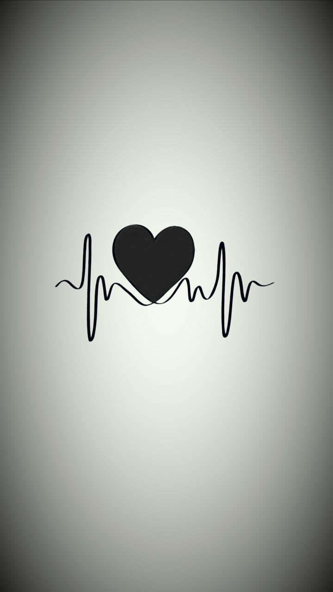
Atte. Franklin Garcia Luna
Para Ti...
❦❦❦❦❦❦Daniela Lucas❦❦❦❦❦❦❦
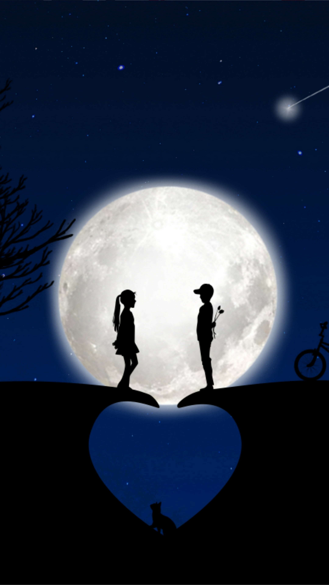
💞AQUI ME TIENES💞
Aqui me tienes, no importa si es lunes o sábado, si es verano o invierno, o si nos separan kilometros.
Aqui me tienes, sin importar el momento, ni fechas en el calendario, aqui estoy por ti y para ti.
Aqui me tienes, porque no hay nadie mejor que tu y te guardo un lugar en mi 🧡.
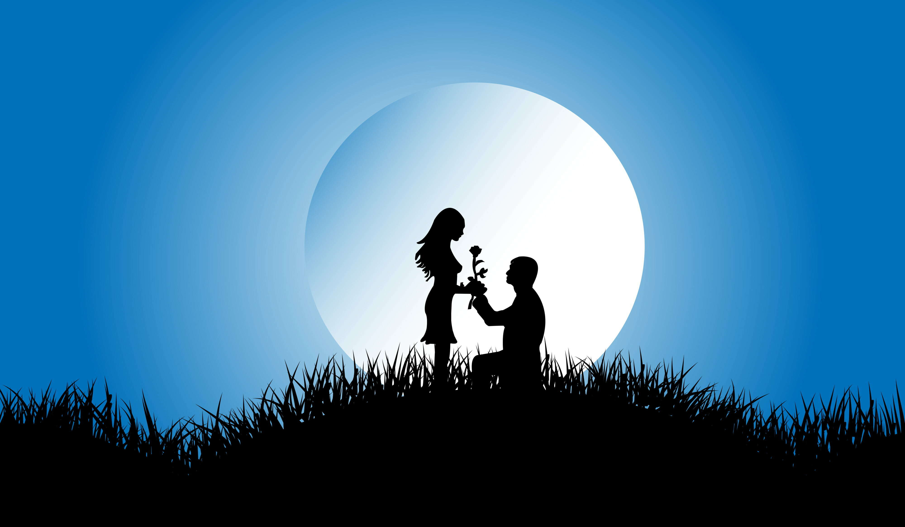
💞TE VI💞
Te vi y pensé... "tengo que concerte", te conocí y pensé... "Ojala nos enamoremos", nos enamoramos y pensé...
"Debo estar soñando", Y NO LO ESTABA...
💞ERES TAN BONITA💞
Eres tan bonita que cuando te veo no se si estoy soñando o estoy despierto; no se si eres real o tan solo una invención de mi pensamiento.
Eres tan bonita que te convertí en mi mas bella utopía; aquella que me motiva al comenzar el día, aquella que le da un sentido a mi vida.
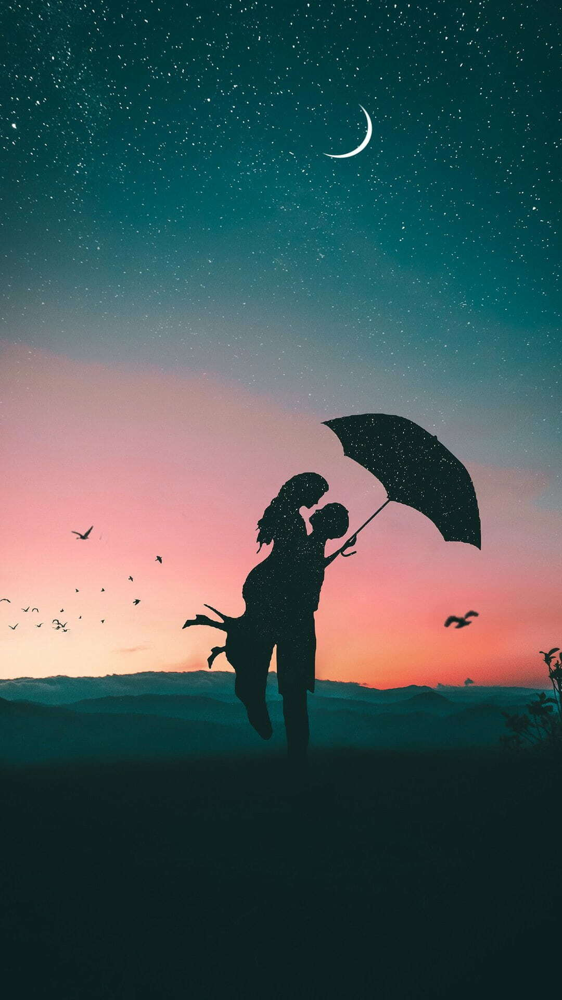
💞MI COMPAÑERA DE VIDA💞
Quiero ser en tu vida Algo más que un instante, Algo más que una sombra Y algo más que un afán. Quiero ser en ti misma, Una huella imborrable Un recuerdo constante Y una sola verdad.Palpitar en tus rezos Con temor de abandono. Ser, en todo y por todo, Complemento de ti. Una sed infinita De caricias y besos; Algo más que una imagen, Y algo más que el ensueño Que venciendo caminos, Llega, pasa y se va. ser el llanto en tus ojos, Y en tus labios la risa. Ser el fin y el principio, La tiniebla y la luz, Y en la tierra, y el cielo; Y en la vida y la muerte. Ser, igual que en mi vida, Has venido a ser tú.
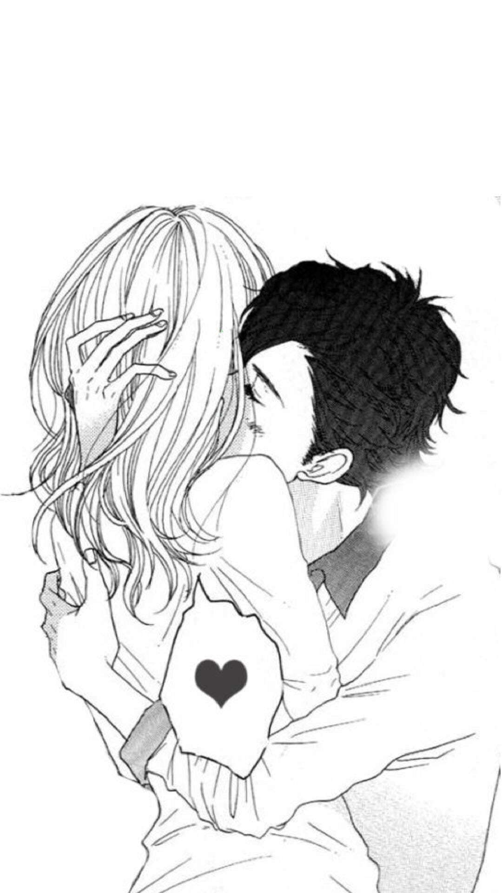
💞TE QUIERO MUCHO💞
Te digo Algo?>
Por favor come bien, abrigate, no te desveles y cuidate mucho, ya que por la distancia no puedo ser yo quien cuide de tí...
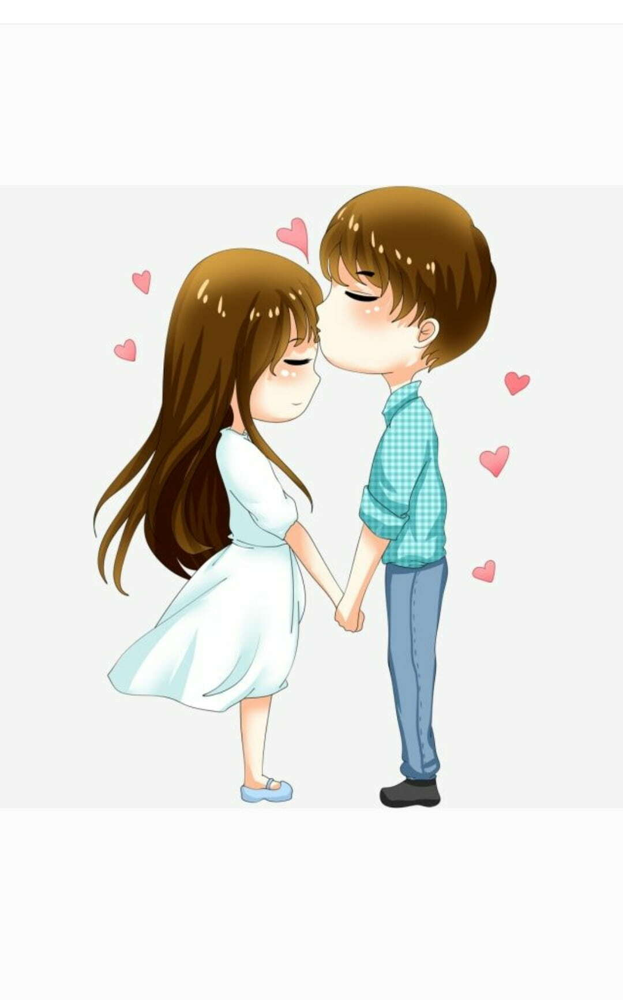
💞TU Y YO💞
❤Ya te he dicho un monton de veces🥰
💘Pero hoy quiero que recuerdes💖
💑que para mi Eres Mi persona Favorita😍
🧡Mi cielo🌠
🧡Mi amor😍
🧡Mi Vida🥺
🧡Mi todo💝
🧡Mi Tesoro💖
🌹Te Amo Mucho🥰
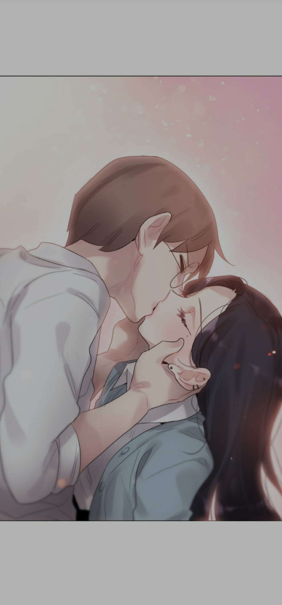
AMOR ETERNO
Podrá nublarse el sol eternamente;
Podrá secarse en un isnstante el mar;
Podrá romperse el eje de la tierra como un débil cristal...
¡Y todo sucederá!
Podrá la muerte cubrirme con su fúnebre crespón;
Pero Jamás en mi podrá apagarse la llama de tu amor.
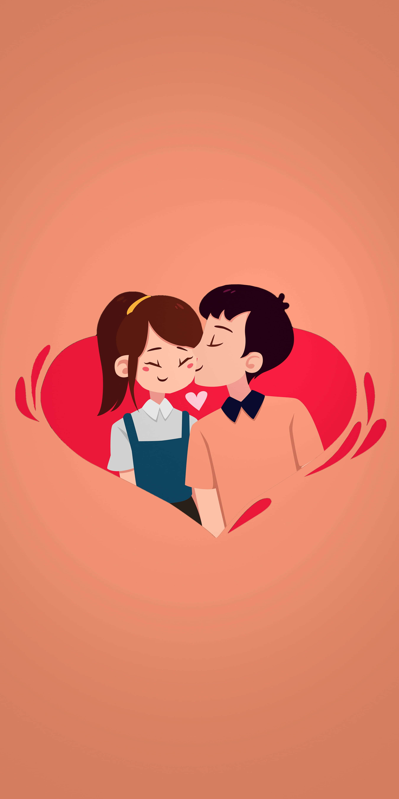
MIENTRAS TU EXISTAS
Mientras tú existas, mientras mi mirada te busque más halla de las colinas, mientras nada me llene el Corazón, si no es tu imagen, y haya una remota posibilidad de que estés viva en algun sitio, iluminada por una luz cualquiera...
Mientras yo presienta que eres y te llamas asi, con ese nombre tuyo tan pequeño, sequiré como ahora amada mia, transido de distancia, bajo ese amor que crece y no se muere, bajo ese amor que sigue y nunca acaba.
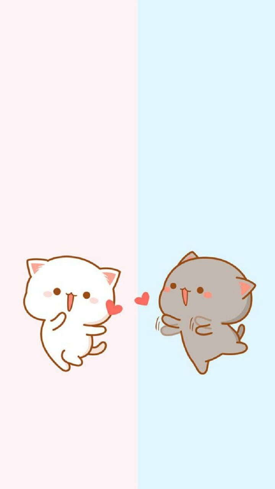
ESTAR SIN TI
Estar sin ti es como estar sin música
sin Mozart sin Vivaldi
y sin el clavecín bien temperado
Estar sin ti es como si de pronto
un gran silencio despojara al mundo
del canto de las olas y del trino
del ruiseñor o la alondra en Verona
Estar sin ti es como estar sin música
ni de la tierra ni de las esferas
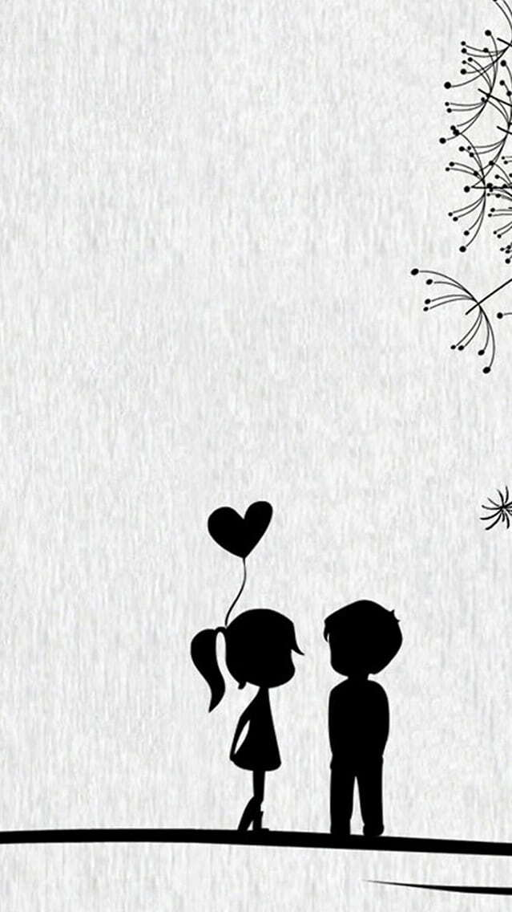
SONETO XXV
Antes de amarte, amor, nada era mío:
vacilé por las calles y las cosas:
nada contaba ni tenía nombre:
el mundo era del aire que esperaba.
Yo conocí salones cenicientos,
túneles habitados por la luna,
hangares crueles que se despedían,
preguntas que insistían en la arena.
Todo estaba vacío, muerto y mudo,
caído, abandonado y decaído,
todo era inalienablemente ajeno,
todo era de los otros y de nadie,
hasta que tu belleza y tu pobreza
llenaron el otoño de regalos.
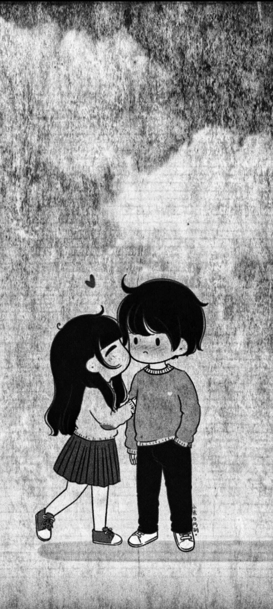
SI TE DIJERA
Y si te dijeran que el sol no saldrá esta mañana,
¿les creerías?
Si te contara que mi mundo se acaba,
¿me entenderías?
Si te digo que te necesito, es porque sin ti estoy sufriendo
Si te dijera que no te amo, te estaría mintiendo.
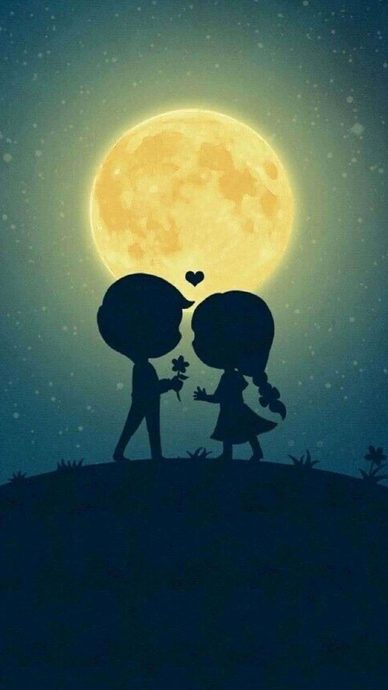
DOS CLAVELES
Dos claveles en el agua duran días y días,
pero mi amor por ti durará toda la vida.
Los claveles piden agua y los presos libertad
y yo pido que me quieras hasta la inmortalidad.
Dos claveles en el agua no se pueden marchitar,
dos personas que se quieren no se pueden olvidar.
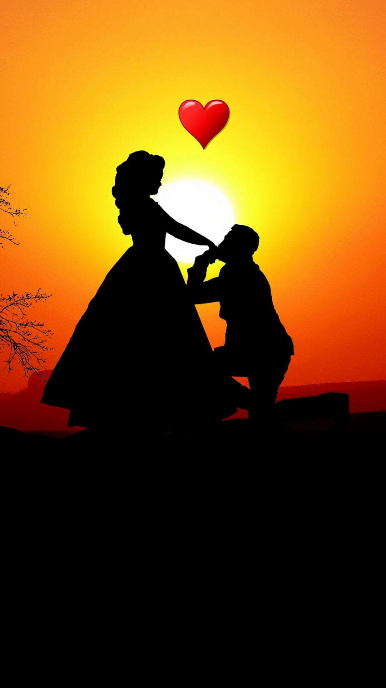
LA MAGIA DE LA NOCHE
El lugar en el que más me gusta despertar es en tus sueños. No te duermas sin decirme que vas a soñar conmigo. Quiero ser la noche en la que enredes tus sueños. Cuando te veo, mi corazón hace big bang y nace un universo en mi corazón. Has estado en mis ojos cada vez que he visto nacer una estrella. Duermo feliz porque sé que nos mira la misma luna. Un abrazo tuyo puede cambiar toda mi historia. Puedes estar lejos de mis ojos, pero no de mis pensamientos. Quiero darte todos los besos del mundo. ¿Y si te digo que tus abrazos son mi lugar favorito? Mi sonrisa siempre se escapa hacia tus labios.
INVENTARIO GALANTE
Tus ojos me recuerdan las noches de verano negras noches sin luna, orilla al mar salado, y el chispear de estrellas del cielo negro y bajo. Tus ojos me recuerdan las noches de verano. Y tu morena carne, los trigos requemados, y el suspirar de fuego de los maduros campos.
De tu morena gracia, de tu soñar gitano, de tu mirar de sombra quiero llenar mi vaso. Me embriagaré una noche de cielo negro y bajo, para cantar contigo, orilla al mar salado, una canción que deje cenizas en los labios...
De tu mirar de sombra quiero llenar mi vaso.
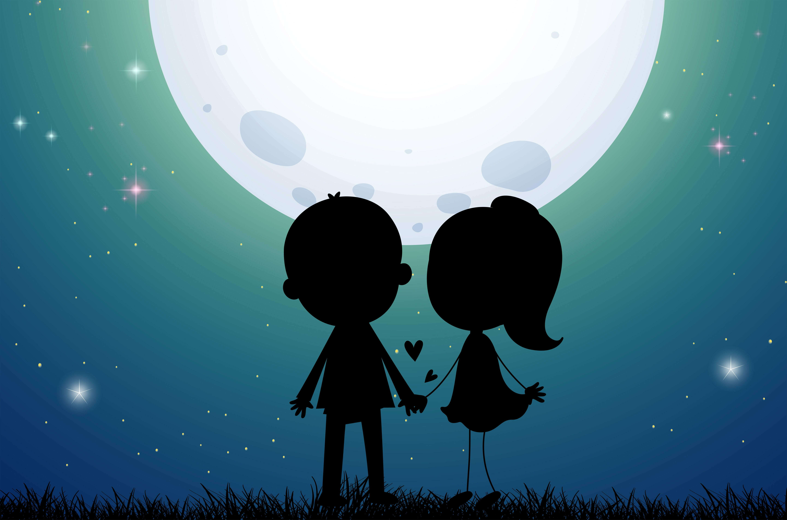
A VECES
A veces tengo ganas de ser cursi
para decir: La amo a usted con locura.
A veces tengo ganas de ser tonto
para gritar: ¡La quiero tanto!
A veces tengo ganas de ser niño
para llorar acurrucado en su seno.
A veces tengo ganas de estar muerto para sentir,
bajo la tierra húmeda de mis jugos,
que me crece una flor
rompiéndome el pecho,
una flor, y decir:
Esta flor, para usted.
TE AMO HOY Y SIEMPRE
Esto te hice con mucho amor: quiero que comprendas lo mucho que significas para mi
eres escencial que complementa mi ser
quiero que seas mi alma gemela,
mi confidente, mi esposita, mi mejor historia,
quiero esta vida contigo, quiero despertar y verte en la carita con una sonriza llena de felicidad